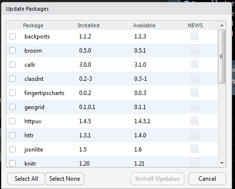
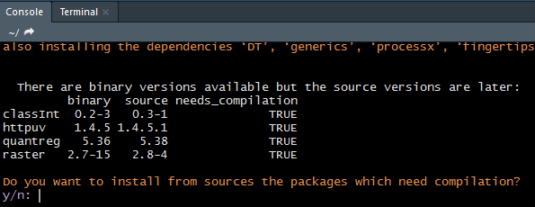

A common scenario: you are new to a programming language, chuffed that you’ve done a few bits and progressing well. A colleague hands you their code to run a regular report. That’s fine, you’ve got a smattering of understanding, and this is existing code, what could go wrong? But the code doesn’t run. You check through it but nothing looks obviously out of place and then your colleague adds to your utter confusion by saying it works on their machine.
Another scenario: you are new to a programming language and have written some code. It’s been working surprisingly well and you feel very pleased with your progress but then, suddenly, it fails. You look on at the computer, stunned. It worked the last time you ran it! You’ve made no changes and yet lots of red errors now appear and these errors are, quite frankly, utterly baffling and even googling them turns up all manner of strange discussions which might as well be in Old English (sort of familiar but you have no idea what it’s saying).
The solution: well there won’t necessarily be just one solution but here are a few things I’ve picked up in my early days using RStudio. I’m still in those early days and I probably haven’t encountered all that could possibly go wrong so please add to these and definitely comment if I’ve made any glaring errors!
My colleague can run this script on this very same computer but I can’t! What’s that all about?
RStudio allows you to install and run your own packages (if your network allows) and that’s really useful when you just want to try something out, follow up on a recommendation or install something a training course has required. Given our strict network and IT installations this is quite a liberating experience!
But what isn’t apparent when you are merrily installing packages is that these are installed to your own folder so on a shared network this may not be accessible by a colleague. Step one in the solving the problem is to check the package is installed on your machine and your profile.
You may now be familiar with:
install.packages("dplyr") to install and then library(dplyr)
but consider using
if (!require(dplyr)) install.packages("dplyr")
so RStudio will install this package if it is missing. Very useful when sharing R scripts as they can just be run with no typing by the recipient.
I ran this code the other day and it was fine and now I get errors – but I haven’t done anything!
This happened recently to a colleague and prompted me to write this blog because I thought, this is probably the kind of thing that happens all of the time and if no one tells you this how could you know? Well there is Google but it’s too much to type I ran this code the other day and it now gives me an error….
My colleague’s code had been working, she hadn’t made any changes but one day it just failed. It wasn’t as if she ran it, ran it again seconds later and it failed, this was a run-it-one-day, it works and run-it-the-next-day, it fails. She asked if I could help and all I could think of was to run it myself. Not exactly expert support I thought. A bit like calling IT with a computer problem and being asked if you’ve rebooted your machine but a bit more advanced than “have you switched it on?”. Something strange happened when I ran it; it worked.
Just as a plug for another blogger she was recreating the plot from this blog:
https://www.johnmackintosh.com/blog/2017-12-21-flow/
https://github.com/johnmackintosh/RowOfDots
This was puzzling but I had a faint recollection from other R people’s stories that you should keep your packages are up to date. One course had even said about updating these regularly and had, thankfully, shown us what to do.
Packages are regularly being updated, a few tweaks here and there I guess. Plus many are built on other packages (like {dplyr} and {ggplot2}) so if they are updated then it’s like a domino effect. RStudio is nicely set up so you don’t have to go to the internet to find out individually what you need to update, you just need to go to ‘Packages’ in the bottom right hand panel of RStudio, select ‘Update’ which has a green circle with an arrow and it brings up a list of what needs updating.

If you’ve not done this for a while you may have quite a few updates!

Eagle eyed readers may recognise this Public Health package {fingertipscharts}. If not, check it out!
{fingertipscharts} is not on CRAN and can be found at the GitHub repository https://github.com/ukhsa-collaboration/fingertipscharts
If you are like me you may have installed some packages that you now rarely use and have no idea what they are. They may ask the following in the console (bottom left of the screen):
Do you want to install from sources the packages which need compilation?

This prompt is so that the package can be updated by building it on your computer. I’ve got a couple of packages that I have tried to do this but each time I go to check for updates they are still requesting an update so I just say no so I can fly through the other updates.
Finally, a bit of a vague warning as I don’t understand this part but I once updated packages after I’d run a couple of scripts. This meant that a couple of the packages that needed updating were already loaded and so things got a bit muddled. I’m not entirely sure if this is a problem but I now shut all projects and code and run a new R Studio screen to do updates.
This blog was written by Zoe Turner, Senior Information Analyst at Nottinghamshire Healthcare NHS Foundation Trust.
Back to top